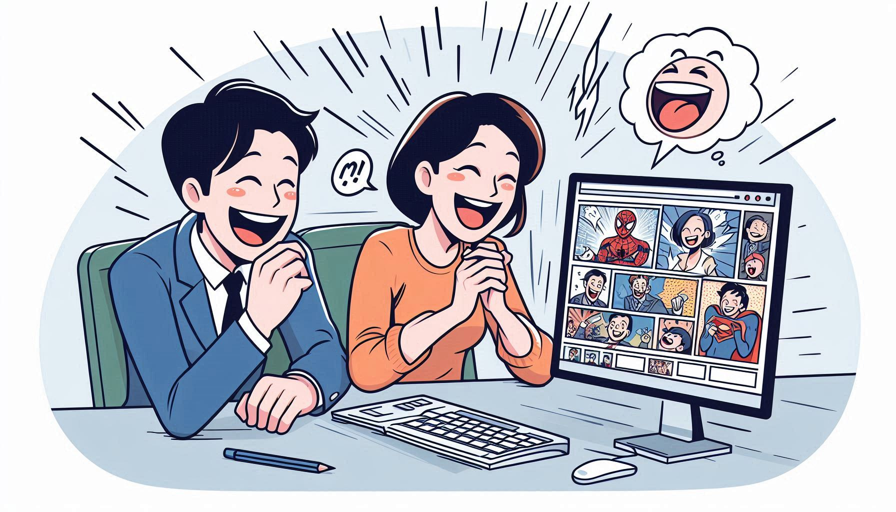

Як підвищити продуктивність з новим блокувальником сайтів

Дізнайтеся, як новий блокувальник сайтів може допомогти вам зосередитися на важливих завданнях. Ми обговоримо функції, які допомагають уникнути відволікань і підвищити вашу продуктивність.
Читати далі
10 кращих жартів від розширення Get Joke Extension

Що може бути кращим, ніж хороший жарт? Ми підібрали для вас 10 найкращих жартів, які ви можете отримати від нашого розширення для браузера.
Читати далі
Чому важливо контролювати час, проведений в Інтернеті
Контроль часу, проведеного в Інтернеті, може суттєво вплинути на вашу продуктивність і здоров'я. У цій статті ми розглянемо, чому важливо управляти своїм онлайн-часом.
Читати далі